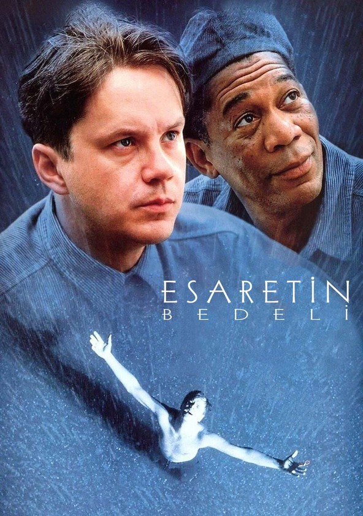

The Witcher

Hikaye
Esaretin Bedeli, Frank Darabont'un senaryosunu yazdığı
ve yönettiği, başrollerinde Tim Robbins ve Morgan
Freeman'ın yer aldığı 1994 yapımı Amerikan dram filmidir.
1947 yılında başarılı bir bankacı olan Andy Dufrense aynı
başarıyı evliliğinde gösterememektedir ve eşi tarafından
başka bir erkekle aldatılmaktadır. Bunu kabullenemeyen Andy,
eşinin aşığıyla buluştuğu bir gece alkolün de verdiği cesaretle
silahına mermileri doldurur ve öfkeyle aracından iner. Eşi ve
aşığının bulunduğu eve gidip onları belki de öldürecekken vazgeçer
ve geriye döner. Fakat bu dönüş Andy'yi kurtaramaz. Aynı akşam eşi
ve aşığı yataklarında mermi yağmuruna tutulmuşlardır. Olay yeri
incelemelerinde Andy'nin ayak izlerine rastlayan polis, onu yargının
eline teslim eder. Andy yargılanması sonucunda suçsuzluğunu ispatlayamaz
ve iki kez ağırlaştırılmış müebbet hapse mahkûm edilir. Bir anda yaşamı
altüst olur. Aldatılmıştır, eşi öldürülmüştür ve bu ölümde hiçbir suçu
olmamasına rağmen artık hayatının geri kalanını hapiste geçirecektir.